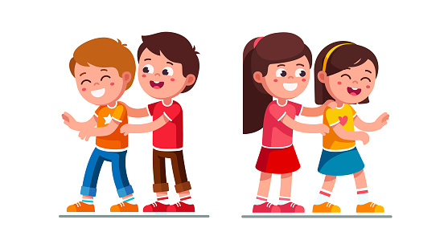
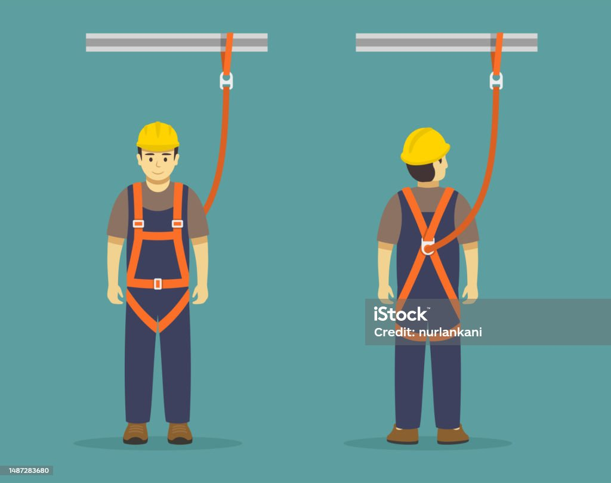

My Vocabulary Page
tickle v(i,t) //
move your fingers on a sensitive part of somebody’s body
in a way that makes them laugh
1.1/ Stop tickling!
1.2/ Stop! You're tickling me!
1.3/ The bigger girls used to chase me and tickle me.
1.4/ I tickled her feet and she laughed.
1.5/ I tickled his feet with a feather.
1.6/ "If someone tickles your shoulder, you might not feel a thing,
but have them tickle your armpits or the soles of your feet
and you’re sure to squirm.
v(i,t) if a part of the body tickles, or if something tickles it,
it feels slightly uncomfortable and you want to rub it
2.1/ My throat tickles.
2.2/ His beard was tickling her cheek.
2.3/ My nose is tickling, I think I'm going to sneeze.
see also: itch, itchy
v(t) please and interest somebody
tickle your imagination, tickle your fancy
3.1/ See if any of these tickle your fancy.
3.2 If you see something that tickles your fancy, I’ll buy it for you.
3.3/ "This book is an inspirational success guide to tickle your imagination
and trigger action."
3.4/ "They want to tickle kids' imagination and inspire the creativity that
naturally flows in fertile, young minds."
tickle somebody to do something
3.5/ I was tickled to discover that we'd both done the same thing.
be tickled pink: be very happy
3.6/ I was tickled pink to hear the news.
3.7/ She was tickled pink to be given flowers.
tickle n(singular) //
give somebody a tickle: an act of tickling somebody
4.1/ She gave the child a little tickle.
4.2/ "Come and give me a tickle!"
4.3/ The dog was lying on his back, waiting for me to give him a tickle.
n(singular) a slightly uncomfortable feeling in a part of your body
5.1/ I have a tickle in my throat. (=that makes me want to cough)
5.2/ "Why does coffee give me a tickle in my throat?"
nuisance n(c) //
(usually singular) a thing, person or situation that is annoying
or causes trouble or problems
what's a nuisance
1.1/ What a nuisance!
1.2/ I've forgotten my umbrella - what a nuisance!
It is a nuisance doing something
1.3/ It's such a nuisance having to rewrite those letters.
1.4/ It's a nuisance having to go back tomorrow.
1.5/ It’s a nuisance filling out all these forms.
1.6/ It's an awful nuisance having builders in the house all day.
It is a nuisance that ...
1.7/ "It is a nuisance that knowledge can only be acquired by hard work."
1.8/ "Apparently it was a nuisance that Russian MP had to publish their income."
be a nuisance
1.9/ I don't want to be a nuisance so tell me if you want to be alone.
1.10/ I hate to be a nuisance, but could you help me?
be a nuisance to somebody/something
1.11/ "I am a nuisance to the society."
1.12/ "They are not dog lovers but a nuisance to the society."
1.13/ "Education is a tool for national development but how has it
become a nuisance to the society?"
1.14/ "The Joys Of Defiance: Is their pride in being a nuisance to the society?"
n(c) make a nuisance of yourself: cause trouble or to annoy other people
2.1/ I hope you're not making a nuisance of yourself.
2.2/ The officer reported that he was obviously very drunk and
making a nuisance of himself.
2.3/ "A number of tourists made a nuisance of themselves trying to drive up
in two wheel drive cars and then getting stuck in the middle of the road."
n(c,u) a public nuisance: behaviour by somebody that annoys other people
and that a court can order the person to stop
3.1/ He was charged with causing a public nuisance.
3.2/ The EPA says the landfill is a public nuisance because of the odors.
3.3/ Local residents claimed that the noise was causing a public nuisance.
3.4/ Residents claim that the company's emissions are harmful
and constitute a nuisance.
acquaintance n(c) //
a person that you know but who is not a close friend
1.1/ "She is my business acquaintance."
1.2/ He's just a business acquaintance.
1.3/ Claire has a wide circle of friends and acquaintances.
1.4/ I bumped into an old acquaintance on the train.
see also: a (business) contact
n(c,u) acquaintance (with somebody): slight friendship
2.1/ He hoped their acquaintance would develop further.
2.2/ He is a man with whom I had a passing acquaintance.
2.3/ I first met Simon in 2008 and struck up an acquaintance with him.
have no acquaintance with somebody
2.4/ I have absolutely no acquaintance with the family.
see also: keep in contact with somebody
n(c,u) acquaintance (with something): knowledge of something
3.1/ I had little acquaintance with modern poetry.
3.2/ Sadly, my acquaintance with Spanish literature is rather limited.
3.3/ They have little acquaintance with colloquial /kə'ləʊ.kwi.əl/ English.
(idiom) make somebody's acquaintance (/make the acquaintance of somebody):
meet somebody for the first time
4.1/ I am delighted to make your acquaintance, Mrs Baker.
4.2/ I’m very pleased to make your acquaintance.
4.3/ I first made his acquaintance in 1992.
4.4/ It was at the Taylors' party that I first made his acquaintance.
4.5/ I made the acquaintance of several musicians around that time.
4.6/ "I'm happy to make the acquaintance of you."
(idiom) on first acquaintance: when you first meet somebody
5.1/ Even on first acquaintance it was clear that he was not 'the right type'.
5.2/ On first acquaintance she seemed a little odd.
on further acquaintance
5.3/ I wasn't sure about Darryl when I first met her, but on further acquaintance
I rather like her.
n(u) (idiom) of your acquaintance: that you know
6.1/ No one else of my acquaintance was as rich or successful.
6.2/ He introduced me to a lady of his acquaintance.
6.3/ You have yet to have the pleasure of her acquaintance.
6.4/ A small girl of my acquaintance insists on eating cornflakes without milk,
flake by flake.
harness n(c) //
a piece of equipment with straps and belts, used to control
or hold in place a person, animal, or object
1.1/ The sight of horses in harness hauling timber was common
a hundred years ago.
a safety harness
1.2/ "Why wear a safety harness? It is important to wear safety harnesses
when working at altitude and in height."
1.3/ "To put on a safety harness, first make sure that all of the straps and buckles
are fastened correctly. Then, put the harness on over your head and adjust
the straps so that it fits snugly around your body. Once you have the harness on,
double check all of the straps and buckles to make sure they are secure."
1.4/ She fastened the safety harness tightly around her waist
before starting the descent.
a parachute harness
1.5/ "Fighter pilots typically wear a parachute harness that is connected
to their ejection seat."
1.6/ "Jumpers wear a parachute harness when they jump off the tower."
1.7/ "We put on parachute harnesses, then climb through the hatch
into the shuttle."
a baby harness (see also: a baby carrier)
1.8/ They suggested that I put a baby harness on my four-year-old.
1.9/ "If you are hiking with a child who is younger than one year of age,
it is advisable to carry a baby harness on your stomach."
(idiom) be back in harness:
have returned to work after being away for a period of time
2.1/ "After a quiet few months, I am back in harness and working
on a new book project."
2.2/ "Here I am back in harness at long last."
2.3/ "Once again, I am back in harness, busy at the office."
2.4/ The longing for work will return and you will be right back in harness.
(idiom) in harness with somebody:
working closely with somebody in order to achieve something
3.1/ They’ll be working in harness with other doctors to compile the report.
3.2/ Thomas was condemned to work in harness with his older brother.
3.3/ "Republicans command a majority in the House, and Speaker John Boehner
and the GOP leadership worked in harness with Obama to pass the legislation.
harness v(t) //
control something, usually in order to use its power
4.1/ There is a great deal of interest in harnessing wind and waves as
new sources of power.
4.2/ There are attempts to harness the sun’s rays as a source of energy
4.3/ We must harness the skill and creativity of our workforce.
4.4/ How can this energy be harnessed effectively for the good of humankind?
4.5/ They are attempting to harness the power of the sun.
4.6/ "A sailing ship is a sea-going vessel that uses sails mounted on masts
to harness the power of wind and propel the vessel."
see also: make use of something
v(t) put a harness on a horse or other animal;
attach a horse or other animal to something with a harness
5.1/ "We try to harness a horse to a carriage."
5.2/ "In the city, the ability to harness a horse will come in handy for a few."
harness somebody/something to something
5.3/ We harnessed two ponies to the cart.
5.4/ In some areas, the poor feel harnessed to their jobs.
5.5/ "I spend most of my day harnessed to my computer talking to you
and many other people."
scaffolding n(u) // or //
a structure of metal poles and wooden boards put against a building for
workers to stand on when they want to reach the higher parts of the building
1.1/ The scaffolding rises 10 stories above the street.
1.2/ The statue is currently surrounded by scaffolding.
1.3/ Scaffolding has been erected around the tower and repair work
will start next week.
1.4/ "It can be difficult to erect scaffolding that's safe and steady on
some older buildings with weakened exterior structures."
n(u) bamboo scaffolding
1.5/ "Bamboo scaffolding is found everywhere in Hong Kong."
1.6/ "Bamboo scaffolding is a temporary structure commonly used in the
construction industry which is made out of bamboo."
1.7/ "Everything you need to know about bamboo scaffolding, a construction
material that is flexible, strong and cheaper than steel and aluminium."
n(c) scaffolding poles, scaffolding tubes
1.8/ "It is necessary to erect scaffolding poles accurately."
1.9/ "We supply a large range of scaffolding tubes include 3.2mm wall tube,
4mm tube, used tube and aluminium tube."
1.10/ "Our brand-new type 4, heavy-duty galvanised steel scaffolding tubes
are used to create the framework on scaffold structures and also washing lines,
handrails, bike & canoe racks, staircases, table legs, climbing frames,
railings and more."
n(c) a safety net, a scaffold safety net
1.11/ Façade maintenance work carried out by two workers on a scaffold
covered by a safety net.
n(c) a scaffolder /'sgæ.fəʊl.dər/
1.12/ "Scaffolders erect and dismantle temporary metal scaffolding on
structures and building sites, so that other people can work at height and
carry out their jobs safely."
1.13/ "Scaffolders erect, dismantle and repair bamboo or metal scaffolding
required in construction work."
1.14/ "Scaffolders are individuals who are physically strong and are comfortable
working outdoors and high above the ground.
n(c) scaffold /'sgæ.fəʊld/:
a structure made of scaffolding,
for workers to stand on when they are working on a building
erect a scaffold
2.1/ "To successfully erect a scaffold, the scaffold pipes are placed in
different ways to perform different functions."
2.2/ "This guide is an exact blueprint on how to build a scaffold from scratch."
on a scaffold
2.3/ "All employees who work on a scaffold must be trained by a person
qualified to recognize the hazards associated with the type of scaffold used
and to understand the procedures to control and minimize those hazards."
2.4/ "Do not work on a scaffold if you feel weak, sick or dizzy or
are taking medication that causes drowsiness or impairs reflexes."
n(c) a scaffold tower
2.5/ "There are two safe ways to build a scaffold tower where you won't ever
have to stand on an unprotected platform."
2.6/ "It can be dangerous to try and build a scaffold tower higher than
what is stipulated by the manufacturer."
2.7/ "Follow our DIY guide on how to build a mobile scaffold tower,
so you can reach heights safely for jobs at home or at work."
wind up v //
wind/wound/wound: /waɪnd/ /waʊnd/ /waʊnd/
(of a person) find yourself in a particular place or situation
1.1/ I always said he would wind up in prison.
1.2/ If he keeps doing stuff like that he's going to wind up in prison!
1.3/ You don't want to wind up homeless, do you?
1.4/ If you take risks like that you'll wind up dead.
1.5/ "Thousands of German and Austrian Jews wound up in Shanghai,
one of the few places in the world you where you didn't need a visa to settle."
wind up doing something
1.6/ We eventually wound up staying in a little hotel a few miles from town.
1.7/ If you aren’t careful lifting weights, you could wind up hurting yourself.
see also: end up, end up doing something
wind up (something): end, or make an activity end
2.1/ I think it's about time we wound this meeting up.
2.2/ We need to wind up now, we only have five minutes left.
2.3/ We should be able to wind things up by 10 o’clock.
2.4/ If we all agree, let's wind up the discussion.
2.5/ The speaker was just winding up when the door was flung open.
2.6/ We need to start winding up now as someone else has booked
the meeting room.
see also: sum up, wrap up, wrap it up
wind up something: close a business or organization
3.1/ Lawyers were called in to wind up the company.
3.2/ The company was wound up in February with debts of $5.2 million.
see also: n(c,u) winding up, a winding-up order
see also: winding, a wind-up toy